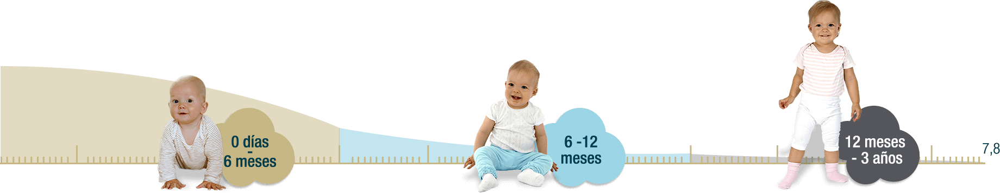

<!DOCTYPE html>
<html>

<head>
	<meta charset="UTF-8">
	<meta name="viewport" content="width=device-width, initial-scale=1,maximum-scale=1, user-scalable=no">
	<meta name="apple-mobile-web-app-capable" content="yes">
	<link type="text/css" rel="stylesheet" href="css/bootstrap.min.css">
	<link type="text/css" rel="stylesheet" href="css/generals.css">
	<title>Alula</title>
</head>

<body id="maternidades-pantalla-uno">
	<section id="section-maternidades-uno">
		<div class="row">
			<div class="col-md-6 pulse animated">
				<div class=" textos-generales-alula">
					<p>Organismos Mundiales recomiendan la <b>lactancia materna
						por 2 años</b>, ya que reduce el riesgo de padecer consecuencias
						a largo plazo.<sup>4,5,6</sup></p>
					<p>La <b>leche humana es un alimento dinámico</b> que va evolucionando 
						a lo largo del tiempo de acuerdo a las necesidades del
						bebé:</p>
				</div>
			</div>
			<div class="col-md-6 pulse animated">
				
			</div>
			<div class="container">
				<div class="col-md-12 pulse animated">
					
				</div>
			</div>
				<div class="col-md-4 raya-izquierda pulse animated">
					<div class="texto-infe ">
						<div class="texto-centrado">
							
						</div>
						<p><b>Ritmo de crecimiento<br>
								en talla y peso más acelerado</b>
							<ul>
								<li>Ganancia de peso mensual~735g</li>
								<li>Ganancia de talla mensual~2.75 cms.</li>
							</ul>
							<br>
						</p>
						<div class="texto-centrado">
							
						</div>
					</div>
				</div>
				<div class="col-md-4 raya-izquierda  pulse animated">
					<div class="texto-infe">
						<div class="texto-centrado">
							
						</div>
						<p><b>Desaceleración del ritmo<br>
						de crecimiento</b>
							<ul>
								<li>Ganancia de peso mensual~410g</li>
								<li>Ganancia de talla mensual~1.35 cms.</li>
							</ul>
							<b>+ Alimentación complementaria (ablactación)</b>
						</p>
							<div class="texto-centrado">
								
							</div>
					</div>
				</div>
				<div class="col-md-4 pulse animated">
					<div class="texto-infe">
						<div class="texto-centrado">
							
						</div>
						<p><b>Estabilización del ritmo<br> de crecimiento</b>
							<ul>
								<li>Ganancia de peso mensual~225g</li>
								<li>Ganancia de talla mensual~1.00 cms.</li>
							</ul>
							<b>+Integración a Dieta familiar</b>
						</p>
						<div class="texto-centrado">
							
						</div>
					</div>
				</div>
		</div>
		<div class="container pulse animated texto-centrado">
			<p><b>La proteína juega un papel crucial para la formación de la masa corporal (peso y talla)<sup>9</sup></b></p>
		</div>
			<div class="logo-position fadeInDown animated">
				
			</div>
	</section>
	<div id="navegacion">
		<div class="row">
			<div class="prev">
				<a href="alula-page-one.html"></a>
			</div>
			<div class="home">
				<a href="index.html"></a>
			</div>
			<div class="next">
				<a href="alula-page-three.html"></a>
			</div>
		</div>
	</div>

	<script type="text/javascript" src="js/lib/framework.js"></script>
	<script type="text/javascript" src="js/generals.js"></script>
</body>

</html>